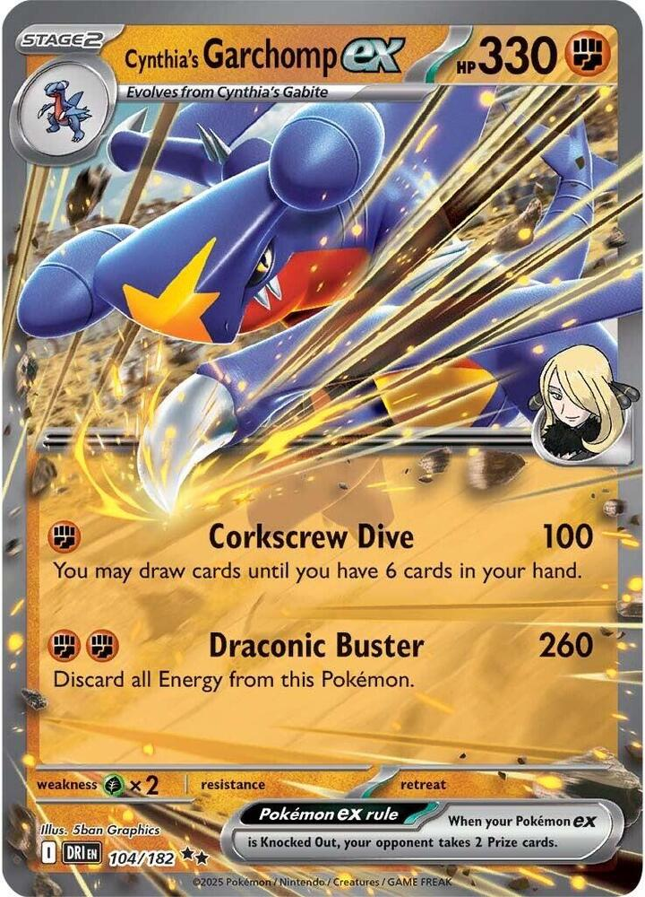
x3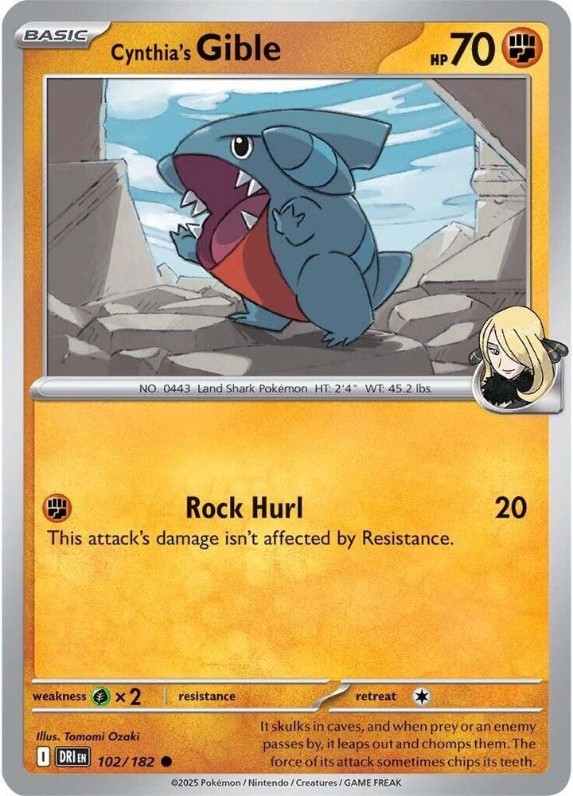
x4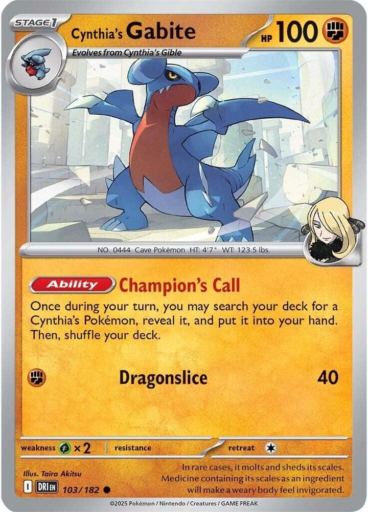
x4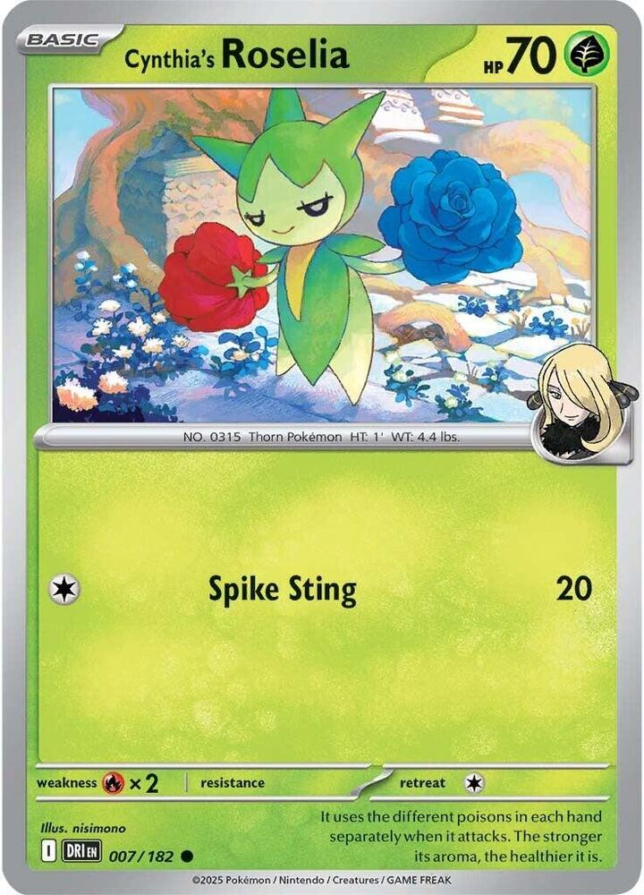
x4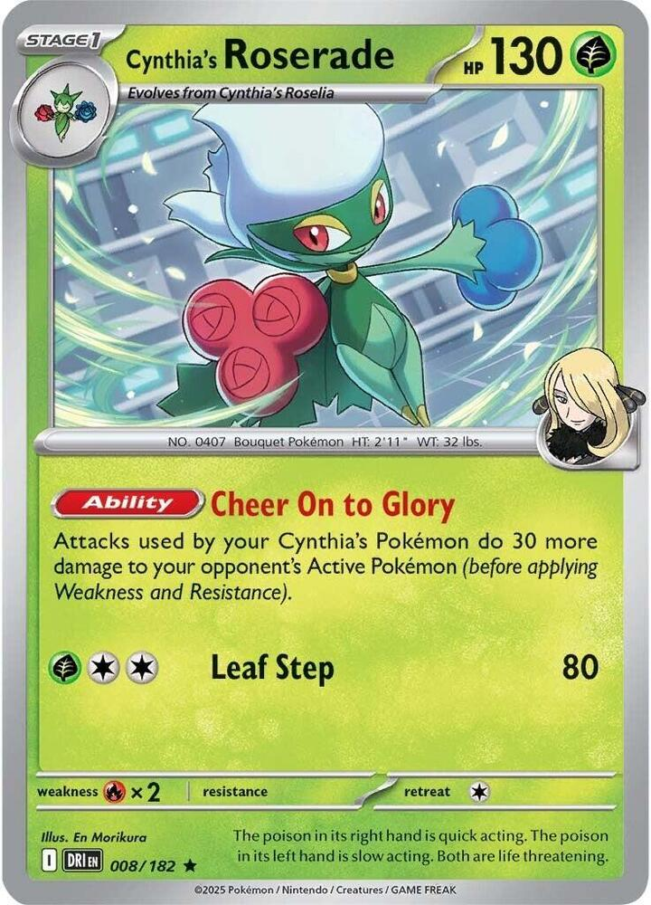
x3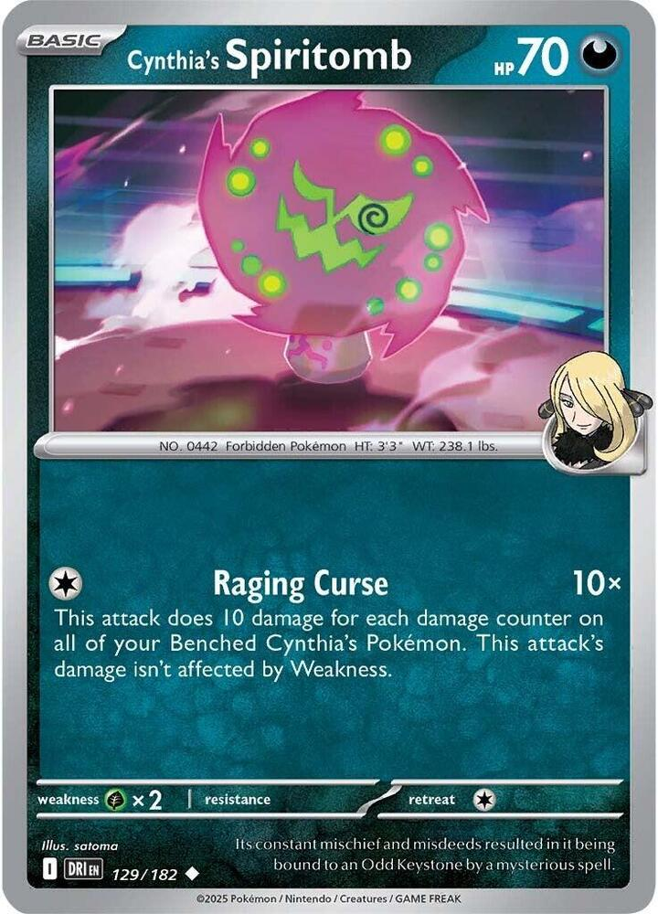

 x4
x4![Boss's Orders [Ghetsis]](./assets/654453_bosss-orders-ghetsis.jpg) x4
x4 x2
x2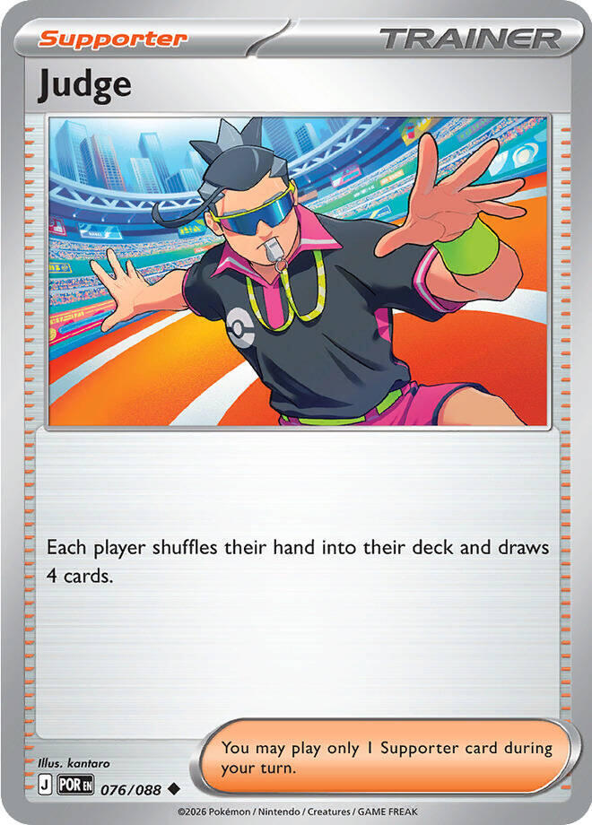
 x3
x3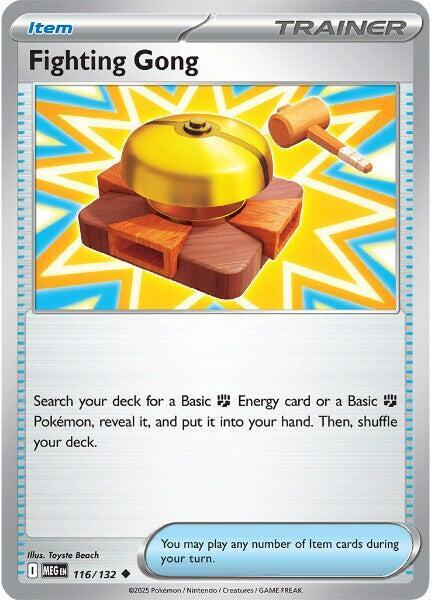
x3 x3
x3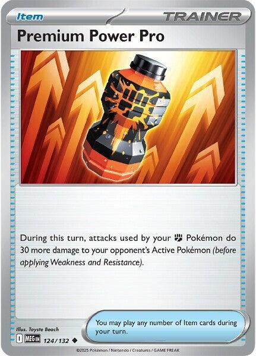
x2 x2
x2 x2
x2

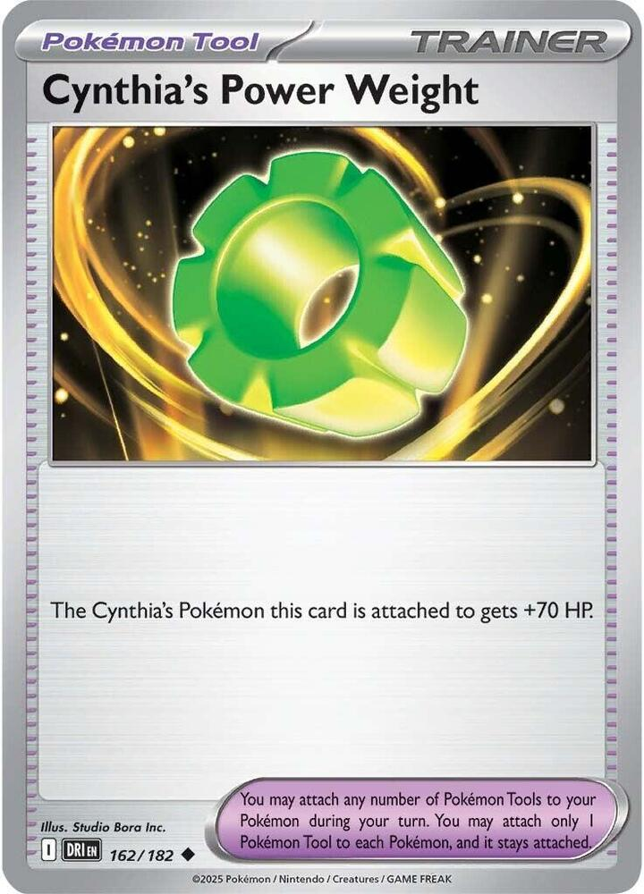
x3
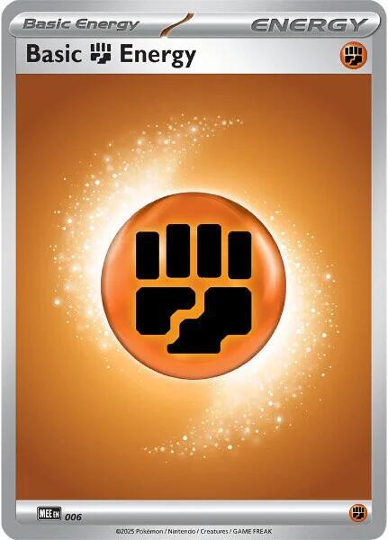
x4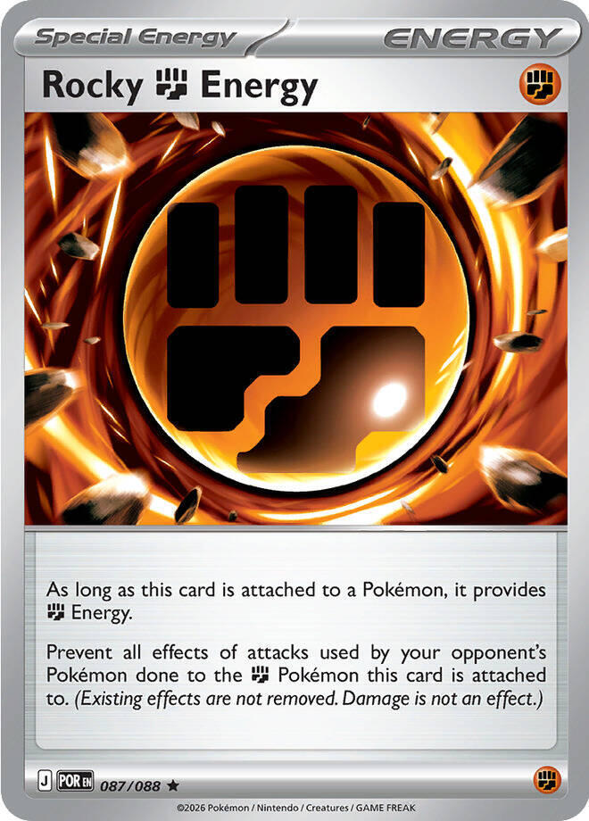
x3
 Champion's Call
Champion's Call 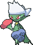

Modeled on Elliot's league deck · one Energy for 100 and a fresh hand, two for 260, and a 400 HP Stage 2 holding the line
← back to all decksGarchomp attacks for one Energy and refills its hand while it does. Corkscrew Dive costs a single  , does 100, and lets you draw until you hold six cards. The attack is the draw engine, so the deck never has to choose between hitting and digging.
, does 100, and lets you draw until you hold six cards. The attack is the draw engine, so the deck never has to choose between hitting and digging.
Everything else on the Bench adds damage or finds the next Garchomp. Each Cynthia's Roserade adds 30 to every attack your Cynthia's Pokémon make, and Premium Power Pro adds 30 more for a turn. Cynthia's Gabite's Champion's Call searches out any Cynthia's Pokémon, every turn, from the Bench.
Draconic Buster is the hammer. It costs , does 260, and sends every Energy on Garchomp to the discard. It is the attack for the Knock Out that Corkscrew can't reach, and Neo Upper Energy pays for it with one card, once a game.
400 HP is the defense. Garchomp has 330, and Cynthia's Power Weight adds 70. The hardest common hit in Standard is 330, so a Weighted Garchomp survives almost anything the format swings.
| Attack | Energy | Damage | With two Roserades | With two Roserades and a Pro |
|---|---|---|---|---|
| Corkscrew Dive | 1 | 100 | 160 | 190 |
| Draconic Buster | 2 | 260 | 320 | 350 |
Weakness does the rest. Against a Fighting-weak deck every number doubles, and Corkscrew with two Roserades is 320 for one Energy. That is the whole matchup against the Gengar decks.

The short version, in order. Game Plans walks through each step.

x3
x4
x4
x4
x3
x4x4x2
x3
x3x3
x2x2x2
x3
x4
x3Pokémon (20)
| Qty | Card | Set | Number | Reg |
|---|---|---|---|---|
| 3 | Cynthia's Garchomp ex | Destined Rivals | 104 | I |
| 4 | Cynthia's Gible | Destined Rivals | 102 | I |
| 4 | Cynthia's Gabite | Destined Rivals | 103 | I |
| 4 | Cynthia's Roselia | Destined Rivals | 007 | I |
| 3 | Cynthia's Roserade | Destined Rivals | 008 | I |
| 1 | Cynthia's Spiritomb | Destined Rivals | 129 | I |
| 1 | Shaymin | Destined Rivals | 010 | I |
Trainers (32)
| Qty | Card | Type | Set | Number | Reg |
|---|---|---|---|---|---|
| 4 | Lillie's Determination | Supporter | Mega Evolution | 119 | I |
| 4 | Boss's Orders | Supporter | Mega Evolution | 114 | I |
| 2 | Hilda | Supporter | White Flare | 084 | I |
| 1 | Judge | Supporter | Perfect Order | 076 | J |
| 3 | Buddy-Buddy Poffin | Item | Temporal Forces | 144 | H |
| 3 | Fighting Gong | Item | Mega Evolution | 116 | I |
| 3 | Poke Pad | Item | Perfect Order | 081 | J |
| 2 | Premium Power Pro | Item | Mega Evolution | 124 | I |
| 2 | Night Stretcher | Item | Shrouded Fable | 061 | H |
| 2 | Pokegear 3.0 | Item | Black Bolt | 084 | I |
| 1 | Rare Candy | Item | Mega Evolution | 125 | I |
| 1 | Switch | Item | Mega Evolution | 130 | I |
| 3 | Cynthia's Power Weight | Tool | Destined Rivals | 162 | I |
| 1 | Team Rocket's Watchtower | Stadium | Destined Rivals | 180 | I |
Energy (8)
| Qty | Card | Set | Number | Reg |
|---|---|---|---|---|
| 4 | Basic Fighting Energy | Mega Evolution Energies | 006 | - |
| 3 | Rocky Fighting Energy | Perfect Order | 087 | J |
| 1 | Neo Upper Energy | Temporal Forces | 162 | H |
20 + 32 + 8 = 60. ✓
Basics: 10 (4 Gible, 4 Roselia, Spiritomb, and Shaymin), which puts the no-mulligan rate at 74%, a point under the 75-85% band. Gible, Roselia, and Spiritomb are all 70 HP, so every Poffin finds two cards the deck wants. Shaymin is 80 and the one Basic Poffin can't reach; Poke Pad can.

 Fighting
Fighting Grass ×2
Grass ×2 legal (Reg I)Corkscrew Dive (100) - You may draw cards until you have 6 cards in your hand.Draconic Buster (260) - Discard all Energy from this Pokémon.
legal (Reg I)Corkscrew Dive (100) - You may draw cards until you have 6 cards in your hand.Draconic Buster (260) - Discard all Energy from this Pokémon.Stage 2 from Gabite. Gives up 2 Prize cards. 330 HP, Retreat 0, Grass Weakness.
Corkscrew Dive is for 100, and you may draw until you have six cards in hand. One Energy, every turn, and the hand refills as it hits. Nothing else in the list draws this well, which is why the only draw Supporter is Lillie's.
Draconic Buster is for 260, and then every Energy on Garchomp goes to the discard. That includes the Rocky, so a Buster is also the turn Garchomp stops being immune to attack effects.
Retreat 0 is the quiet stat. Garchomp leaves the Active Spot for free, so Boss's Orders can't strand it, and a damaged one can step back to the Bench and become fuel for Spiritomb.
Three copies. Gabite searches the next one, and Night Stretcher brings back a dead one.
 FightingGrass ×2
FightingGrass ×2 1legal (Reg I)Rock Hurl (20) - This attack's damage isn't affected by Resistance.
1legal (Reg I)Rock Hurl (20) - This attack's damage isn't affected by Resistance.70 HP, Fighting, Retreat 1. Four copies, all Poffin-legal, and Fighting Gong finds them too. Rock Hurl does 20 for and rarely matters.
A Rocky Fighting Energy on a Gible shields it from every attack effect, and the Energy rides both evolutions to Garchomp. That is where the first Rocky goes.
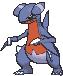
FightingGrass ×21legal (Reg I)Dragonslice (40)The search engine. 100 HP, Retreat 1.
Champion's Call: once during your turn, search your deck for a Cynthia's Pokémon and put it into your hand. It reaches all six Cynthia's Pokémon in the list, Garchomp ex included, and every Gabite on the Bench calls once a turn.
Four copies, the full line under three Garchomp. A Gabite that evolves stops calling, so the second one is the Gabite that stays behind to keep searching. Dragonslice does 40 for .
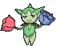
Grass Fire ×21legal (Reg I)Spike Sting (20)
Fire ×21legal (Reg I)Spike Sting (20)70 HP, Grass, Retreat 1, Fire Weakness. Its whole job is becoming Roserade. Four copies, because the deck wants two Roserades standing every game. Spike Sting does 20 for .
 GrassFire ×21legal (Reg I)Leaf Step (80)
GrassFire ×21legal (Reg I)Leaf Step (80)The damage. 130 HP, Grass, Retreat 1, Fire Weakness.
Cheer On to Glory: attacks used by your Cynthia's Pokémon do 30 more damage to your opponent's Active Pokémon, before Weakness. Every copy adds its own 30, so two Roserades on the Bench make Corkscrew 160 and Buster 320.
Three copies. It is the card opponents shoot first, because it is the cheapest body that adds damage, and a Power Weight makes it 200. Leaf Step costs in a deck with no Grass Energy, so it never attacks.


 DarknessGrass ×21legal (Reg I)Raging Curse (10x) - This attack does 10 damage for each damage counter on all of your Benched Cynthia's Pokémon. This attack's damage isn't affected by Weakness.
DarknessGrass ×21legal (Reg I)Raging Curse (10x) - This attack does 10 damage for each damage counter on all of your Benched Cynthia's Pokémon. This attack's damage isn't affected by Weakness.The single-Prize attacker. 70 HP, Darkness, Retreat 1, Grass Weakness.
Raging Curse is , and does 10 damage for each damage counter on all of your Benched Cynthia's Pokémon. Weakness doesn't apply.
It turns the opponent's damage into yours. A Garchomp that took 260 carries 26 counters. Retreat it for free, promote Spiritomb, and Raging Curse is 260, plus 30 for each Roserade. Two Roserades make it 320 for one Energy, from a Basic that gives up one Prize.
It is the answer to the Prize-tax decks. Mega Gengar ex's Shadowy Concealment only discounts Knock Outs by a Pokémon ex, and Spiritomb isn't one. One copy, and Champion's Call finds it. It is Darkness, so Premium Power Pro does nothing for it and Risky Ruins never touches it.
 GrassFire ×21legal (Reg I)Smash Kick (30)
GrassFire ×21legal (Reg I)Smash Kick (30)80 HP, Grass, Retreat 1, Fire Weakness.
Flower Curtain prevents all damage done to your Benched Pokémon that don't have a Rule Box by attacks from your opponent's Pokémon. It keeps Gible, Gabite, Roselia, and Roserade safe from spread and snipe damage.
It stops damage, not damage counters. Chaotic Pain, the Bench half of Phantom Dive, and Munkidori all walk through it. Sixteen of the 35 current lists run one.
 legal (Reg I)
legal (Reg I)Four copies. Shuffle your hand into your deck and draw six, or eight while you still hold all six Prizes. Going first, a turn-2 Lillie's still draws eight, and in the Live game it did.
legal (Reg I)Four copies, the most in the field. Corkscrew takes a Knock Out every turn it can reach one, and Boss's Orders picks which. Against the Gengar decks it drags up the Mega Gengar ex, because a Buster on the Mega ends Shadowy Concealment for the rest of the game.
 legal (Reg I)
legal (Reg I)Search your deck for an Evolution Pokémon and an Energy card. Two copies. Garchomp ex and a Rocky is the usual pick, and Hilda is how the Rare Candy finds its Stage 2.
 legal (Reg J)
legal (Reg J)Each player shuffles their hand into their deck and draws four. One copy. It lands hardest on the player who plans several turns ahead, and hardest of all right after they searched out their line.
 legal (Reg H)
legal (Reg H)Three copies. Two Basics with 70 HP or less, straight to the Bench. Gible, Roselia, and Spiritomb all qualify.
legal (Reg I)Search your deck for a Basic Fighting Energy or a Basic Fighting Pokémon. Three copies, and in every one of the 35 lists. It finds a Gible or an Energy, which covers a bad opening from either side. Rocky Fighting Energy is Special, so Gong can't find it.
legal (Reg J)Search your deck for a Pokémon without a Rule Box. Three copies. Everything but Garchomp ex qualifies, Gabite and Roserade included, so a Pad is whatever Stage 1 you're missing.
legal (Reg I)During this turn, your Fighting Pokémon's attacks do 30 more to the Active, before Weakness. Two copies. Garchomp is Fighting; Spiritomb is Darkness and gets nothing from it.
 legal (Reg H)
legal (Reg H)A Pokémon or a Basic Energy card from your discard pile to your hand. Two copies. A Knocked Out Garchomp comes back, and so does the Spiritomb.
 legal (Reg I)
legal (Reg I)Look at the top seven cards of your deck and take a Supporter. Two copies. It finds Boss's Orders on the turn a Knock Out needs one.
legal (Reg I)One copy. Gible straight to Garchomp, on your second turn at the earliest, and never on a Gible that arrived this turn. With one Candy, the turn-2 Garchomp is a bonus, not a plan. The Live list that beat Xero on September 25 found it.
legal (Reg I)One copy. Everything in the list retreats for one or zero, so Switch is for a stranded or Poisoned Active, not for the retreat bill.
legal (Reg I)The Cynthia's Pokémon this card is attached to gets +70 HP. Three copies, in all 35 current lists.
It usually goes on the Garchomp in front, because 400 clears the format's 330 wall. Against a deck that snipes for exactly 130, which is Chaotic Pain, it goes on a Roserade instead, and the Roserade survives the snipe with 70 to spare.
legal (Reg I)Colorless Pokémon in play, on both sides, have no Abilities. One copy. Nothing in this list is Colorless, so it only ever hurts the opponent, and it doubles as the answer to their Stadium. Against the Gengar decks it replaces Risky Ruins.
legalFour copies. Fighting Gong and Night Stretcher both find it, and neither finds Rocky. Hilda finds either.
Energy. Prevent all effects of attacks used by your opponent's Pokémon done to the Pokémon this card is attached to. (Existing effects are not removed. Damage is not an effect.)legal (Reg J)As long as it is attached, it provides Fighting Energy, and it prevents all effects of your opponent's attacks on the Fighting Pokémon holding it. Damage isn't an effect. So it stops Poison, damage counters placed by an attack like Chaotic Pain, and every other attack effect, but not the damage itself.
Three copies. Put it on a Gible early and it rides the evolution to Garchomp. Draconic Buster discards it with the rest.
 ACE SPEC Rare Energy. If this card is attached to a Stage 2 Pokémon, this card provides every type of Energy but provides only 2 Energy at a time instead.legal (Reg H)
ACE SPEC Rare Energy. If this card is attached to a Stage 2 Pokémon, this card provides every type of Energy but provides only 2 Energy at a time instead.legal (Reg H)ACE SPEC. Colorless Energy, and on a Stage 2 it provides every type, two at a time. On Garchomp that is from one card, so a Garchomp that just evolved can Draconic Buster the same turn. Buster discards it, and Night Stretcher only returns Basic Energy, so it works once a game.
Boosts are the Roserades on your Bench and the Premium Power Pros you played this turn. Each adds 30, before Weakness.
Corkscrew Dive
| Boosts | Damage | Into Fighting Weakness |
|---|---|---|
| None | 100 | 200 |
| One | 130 | 260 |
| Two | 160 | 320 |
| Three | 190 | 380 |
| Four | 220 | 440 |
Draconic Buster
| Boosts | Damage | Into Fighting Weakness |
|---|---|---|
| None | 260 | 520 |
| One | 290 | 580 |
| Two | 320 | 640 |
| Three | 350 | 700 |
Without Weakness, only Buster kills a Mega. Two boosts put it at 320, enough for Dragapult ex. Three put it at 350, which takes a Mega Excadrill ex at 340 or a Mega Gengar ex at 350. Corkscrew tops out at 250, with three Roserades and both Pros in one turn.
Cynthia's Spiritomb, Raging Curse
| Counters on your Bench | Raging Curse | With two Roserades |
|---|---|---|
| 13, a Roserade that lived through one Chaotic Pain | 130 | 190 |
| 26, a Garchomp that took a Poisoned Chain-Crazed and retreated | 260 | 320 |
Only three cards in the deck are worth two Prizes, and they are the ones wearing the Weights. An opponent who can't get through 400 HP has to take six singles instead, and the Bench is made of them. That is why the Bench is the target. Every Roserade or Gabite they take is a Prize that also cuts your damage or your search.
Poffin benches two Gible, or a Gible and a Roselia when a Gible is already down. Fighting Gong and Poke Pad fill in what it missed. Attach Rocky Fighting Energy to a Gible, because it stays on through both evolutions and makes the finished Garchomp immune to attack effects.
A Spiritomb or Shaymin in the Active Spot is fine to open with. Both retreat for one.
Evolve every Gible you can on turn 2. Each Gabite calls once a turn, and the calls go in order: Garchomp ex until one is ready to evolve, then Roserade, then Spiritomb. Keep one Gabite unevolved as long as you can. It is the search engine, and the Garchomp it becomes stops searching.
The line evolves one step a turn, so the first Garchomp arrives on your third turn. The lone Rare Candy makes it turn 2. Gabite calls the Garchomp, and the Candy goes on the other Gible, which has sat a turn. That is how the Live game on September 25 went.
One Energy, 100 plus 30 for each Roserade, and a hand of six. Take the Knock Out when it's there, and let the draw find the next Boss's Orders when it isn't. Two Roserades before the first Corkscrew is the target.
Draconic Buster is for the Knock Out Corkscrew can't reach: a Mega, a Weighted or Caped ex, anything past 250 without Weakness. It discards everything, so the Garchomp that fires it needs two new Energy to Buster again, or one attachment to Corkscrew. Neo Upper makes one Buster cost a single card.
Against a deck that discounts Knock Outs by Pokémon ex, Spiritomb is the attacker. The damage on your Bench is its ammunition, and a hurt Garchomp that retreats for free is the biggest pile of it.


Versus the Gengar decks. This is the matchup the page exists for. Every Pokémon in Xero's Gengar Gang is weak to Fighting, so every number doubles. Corkscrew alone is 200, which kills Toxtricity, Haunter, and every Basic but the dog. One boost is 260 and kills Okidogi ex. Two boosts are 320 and kill Gengar ex. Buster kills anything. Here is what they have.
How the Gengar deck plays against this is in Versus Cynthia's Garchomp ex.
Versus Fox's Fire decks. Roselia, Roserade, and Shaymin are weak to Fire, and the Garchomp line isn't. Expect the Roserades to go first.

Where this list comes from, pulled from Limitless on September 25, 2026.
The core is fixed. There are 35 current lists, 15 from paper events (NAIC 2026, Worlds 2026, and the Baltimore Regional) and 20 from the online ladder, and they agree on almost every slot.
| Card | Lists running it | Usual count |
|---|---|---|
| Gible, Gabite, Garchomp ex | 35 | 4, 4, 3 |
| Roselia, Roserade | 35 | 4, 3 |
| Lillie's Determination | 35 | 4 |
| Boss's Orders | 35 | 3 |
| Buddy-Buddy Poffin, Poke Pad | 35 | 4 each |
| Fighting Gong | 35 | 3 |
| Cynthia's Power Weight | 35 | 3 |
| Basic Fighting Energy | 35 | 4 |
| Cynthia's Spiritomb | 34 | 1 |
| Rocky Fighting Energy | 33 | 4 |
| Night Stretcher | 27 | 1-2 |
| Premium Power Pro | 26 | 2 |
| Hilda, Pokegear 3.0 | 24 each | 2 |
| Neo Upper Energy | 22 | 1 |
| Switch | 22 | 1 |
| Team Rocket's Petrel, Special Red Card | 18 each | 1 |
| Shaymin | 16 | 1 |
| Judge | 14 | 1 |
| Rare Candy | 13 | 1 |
Tatsugiri is in none of them. Not one of the 174 Garchomp lists on Limitless runs it, counting 114 from paper events back to June 2025 and 60 from the online ladder. The Live opponent who beat Xero on September 25 added it, along with a Powerglass, and never showed a Power Weight in about 30 cards drawn. Three Weights would have turned up about 88% of the time, so that list most likely cut them. Xero isn't sure whether Elliot runs Tatsugiri, and he does remember a Spiritomb from Elliot's game against Fox.

Written for the player across from this deck. What you see, what it means, and what to do.
| You see | It means | Do this |
|---|---|---|
| Tatsugiri in the Active Spot on turn 1 | the Live variant, with Powerglass and likely no Power Weight | the bare numbers hold, and one Chaotic Pain kills any Roserade or Gabite without a Rocky |
| A Power Weight on a Roserade | they know your snipe | Chaotic Pain the other Roserade, or a Gabite |
| A Power Weight on Garchomp | the default, 400 HP | two Poisoned Chain-Crazed, or one and a Void Gale; a Chain-Crazed and a Pain is 390, ten short |
| A Rocky on a Gible or Gabite | that line is safe from Chaotic Pain until a Buster discards it | shoot the Roselias and the other Gabite |
| A damaged Garchomp retreating for free | Spiritomb is coming | Chaotic Pain the Spiritomb while it's bare |
| Neo Upper Energy on a fresh Garchomp | a Buster this turn, once a game | have the next attacker ready |
| Rare Candy on their second turn | the fast Garchomp | the list runs one, so the next Garchomp evolves the long way |
| Judge | your hand is four new cards | bench what you draw |
| Team Rocket's Watchtower | their answer to Risky Ruins | replay the second Ruins |
| Munkidori and Darkness Energy | the online variant that won two events | Munkidori first, the same as every Munkidori room |
What the rest of the field plays in these slots.
| Card | In place of | Seen in |
|---|---|---|
| Tatsugiri | a Pokegear 3.0 | the Live list that beat Xero, and none of the 174 published lists. Attract Customers takes a Supporter from the top six while it is Active, and its Surf costs Fire and Water, so it never attacks. |
| Powerglass | a Power Weight | the same Live list, and 1 of 35. At the end of your turn it attaches a Basic Energy from your discard pile to the Active Pokémon holding it. |
| Team Rocket's Petrel | a Hilda or a Pokegear | 18 of 35. It searches out any Trainer, Rare Candy and Power Weight included. |
| Special Red Card | the Judge | 18 of 35. A comeback card, playable only once the opponent has 3 Prizes or fewer left. |
| Unfair Stamp | Neo Upper Energy | 8 of 35. Playable the turn after one of your Pokémon is Knocked Out. Both players shuffle their hands in, you draw 5, and they draw 2. |
| Kieran | a Hilda | 6 of 35. A switch, or 30 more against an Active Pokémon ex for the turn. |
| Munkidori, Crispin, and Darkness Energy | Rocky, Neo Upper, Premium Power Pro, and Hilda | sadflorci's two online wins, 1st of 107 and 1st of 93. With a Darkness Energy attached, Adrena-Brain moves 3 counters a turn from their Pokémon to yours, so damage you leave on a Garchomp comes back around. |